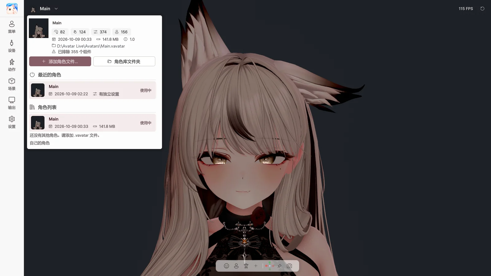

3. 开始界面与角色库#
开始界面#

运行 Avatar Live 后，在开始界面选择角色和设备，然后启动。
角色#
| 项目 | 作用 |
|---|---|
| 打开角色… | 打开 .vavatar 文件（也可以拖放到窗口中） |
| 最近 / 文件夹 / 已导入 | 最近打开的角色 / 角色文件夹中的角色 / 导入角色库的角色 |
| 单击 · 双击卡片 | 选择 · 直接启动 |
| 设为默认 | 将此角色设为默认角色 |
| 文件位置 | 在资源管理器中显示文件 |
| 从列表移除 | 仅从最近列表中移除（文件保留） |
| 查找位置… | 重新指定已移动的文件 |
| 更改 / 打开文件夹（文件夹标签页） | 更改角色文件夹 / 在资源管理器中打开 |
状态显示：可用 · 文件丢失 · 无法打开 · ★ 默认
设备与启动设置#
| 项目 | 作用 |
|---|---|
| 摄像头 开关 · 列表 | 启动时开启摄像头追踪，选择要使用的摄像头 |
| 预览 | 查看摄像头画面（直播中他人也能看到，请注意） |
| 麦克风 开关 · 列表 | 启动时开启麦克风（口型同步），选择要使用的麦克风 |
| 测试 | 确认麦克风是否有声音输入 |
| 面部 | 面部追踪引擎（自动 / MediaPipe / OpenSeeFace） |
| 手部 | 手部追踪（MediaPipe / Ultraleap / 关闭） |
| 启动角色 | 每次询问 / 上次使用 / 默认角色 |
| 总是显示开始界面 | 每次都从此界面开始 |
| ▶ 启动 Avatar Live | 以所选角色启动 |
安全启动#
不使用摄像头、麦克风和追踪器启动。用于因设备问题无法启动的情况。 请 按住 Shift 运行，并一直按住直到开始界面出现。
恢复界面#
如果上次在加载角色时程序关闭，下次运行时会显示此界面。
| 按钮 | 作用 |
|---|---|
| 重试 | 重新加载同一个角色 |
| 选择其他角色 | 返回开始界面 |
| 安全启动 | 不使用设备加载同一个角色 |
运行中切换角色#

点击左上角的 角色名称 会打开角色库。
| 项目 | 作用 |
|---|---|
| 角色信息 | PhysBone、Contact、表情参数、菜单项的数量，日期，大小 |
| 添加角色文件… | 将 .vavatar 导入角色库 |
| 角色库文件夹 | 打开角色库文件夹 |
| 最近的角色 | 切换到最近打开的角色 |
| 角色列表 | 切换到角色库中的角色，🗑 删除（设置保留） |
| 自己的角色 | 导出器使用方法说明 |
切换角色时会保存设置，并以新角色重新启动。已开启的摄像头和麦克风会照常重新开启。
返回开始界面#
- 左上角 标志 → 重新启动
- 设置 › 启动 › 重新启动